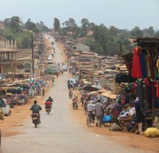

I was born in Vancouver, Washington, but quickly moved to Kalispell, Montana. My father worked many jobs across various fields, but finally landed on construction, specializing in tile. This taught me the true meaning of hard work, seeing my father work so hard and excellently to provide for a family and be a great asset to any company.

My parents moved me and my siblings to Kampala, Uganda to plant churches. They successfully planted two during our 6 ½ years there. While in Uganda, I learned how to operate in foreign environments and amongst a diverse people group. Seeing and living in another part of the world for the better part of a decade has forever changed my perception of people and cultures. A deep respect for culture and it’s impact in the world was cultivated in me.
We had to move back to the US with only a 24 hour notice, due to a tense situation that potentially posed a major threat to my family’s wellbeing. We moved to North Carolina because a fantastic church we had partnered with had a lovely family that opened their arms to us, despite the short notice of our arrival. This period of time emphasized compassion and wisdom to me. As the song goes, “You’ve got to know when to hold them; know when to fold them. Know when to walk away; know when to run.” (Schlitz, Don. “The Gambler.” Bare. Bobby Bare. 1976.)
After finishing High School at William G. Enloe High School in 2019, I started going to The College at Southeastern Theological Baptist Seminary, pursuing psychology. When I met the woman who would become my wife, I knew that I had to be able to take care of her. I had always had an interest in computers, and honestly saw them as less complicated (or emotionless) brains. So pursing IT really fulfilled my desire to fix things, even if the things that I was fixing weren’t humans. However, this dedication to encourage and help people translates very well into my professional life. I genuinely enjoy going above and beyond to help people and be a help in any capacity.